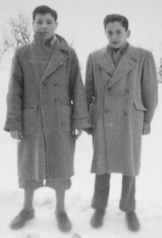

Quercegrossa (Ricordi e memorie)
CAPITOLO XI - COSE D'ALTRI TEMPI
(Appendice fotografica)
Torna all'Indice Cose d'altri tempi
Vai all'Indice dei Capitoli
Appendice fotografica
(Foto 1)
(Foto 2)
(Foto 3)
(Foto 4)
(Foto 5)
(Foto 6)
Nevicate
I grandi eventi naturali entrano nella memoria collettiva e da questa riemergono nel tempo mantenendo intatta quella tensione e paura che essi originano nell’uomo, inerme di fronte alle calamità naturali. Così si ricordano i terremoti del 1911, quando a Vignale i Mori dormirono fuori per diversi giorni, e quelli più recenti del 1958, le grandi alluvioni apportatrici di disastri e gli anni di siccità, quando per mesi non cadeva una goccia di acqua. A questo schema negativo fanno eccezione le nevicate, le benefiche nevicate utili alla crescita del grano che fino agli anni Sessanta del Novecento cadevano annualmente abbondanti sulla nostra terra di Quercegrossa: “A Passeggeri nevicava tutti gli anni”, ricordano gli anziani, ma anche a Quercia non passava inverno senza avere una bella nevicata. Certe sere, quando cominciavano a cadere lenti i grossi fiocchi, noi ragazzi gioiosamente agitati dall’evento si correva subito a preparare un bel bicchiere di neve dove si versava del vino rosso, e così si gustava con un cucchiaino quella che possiamo definire una granita.

Le grandi precipitazioni nevose del 1956 e 1963 furono eventi memorabili per l’altezza della neve, che raggiunse i 40/50 cm, e per la durata. Purtroppo nel 1956 vennero accompagnate da gelate rovinose per gli ulivi. Le immagini seguenti mostrano ragazzi e grandi, protetti malamente da sciarpe e cappotti di lana pesante, pronti a fare a pallate e costruire l’omino di neve con le mani infreddolite, ma riscaldati da quell’ebrezza naturale che una nevicata produce in ogni giovane.
Franco Carusi (a destra) e Giulio Nencioni.
Certamente, se pur abbondanti, i due fenomeni ricordati erano niente di fronte all’evento eccezionale, tramandato dagli storici senesi, avvenuto tanti secoli fa, e si stenta a crederci: “Nel 1464 al 26 dicembre mise una nieve alta un braccio e 3/4 (oltre un metro) e parecchi dì rinforzava di nuovo che di dì in dì bisognava scaricare e tetti, e casconne di quegli che non vi era che gli scaricasse, che fu tal buttigaio, cioè Francesco Taviani, che spaccio più di 2 mila palette stazzonate (piegate, rovinate) per buone e fu misurata la nieve nel pian delle fornaci braccia 4 alta (2,40 m.), e in molti luoghi molta più assai”. Da ricordare che quei secoli, secondo i climatologi, furono molto freddi.
Un gruppo di ragazzette dall’ingrandimento di un fotogramma fatto stampare da don Ottorino. Da destra: Lucia Mori, Fiorella Guarducci, Elina Volpini, Vanna Caldi, Raffaella Mori e Lorenza Mori.
In basso, da destra: Raffaello, Ermanno, Pierino, Mario, Armando, Berto Mori, Augusto, Dedo e Danilo.
Da destra: Raffaello, Ermanno, Pierino, Mario, Armando, Berto Mori, Augusto, Dedo e Danilo.
1956: il gruppo allegro dei giovani davanti alla villetta Castagnini - Papi.
|